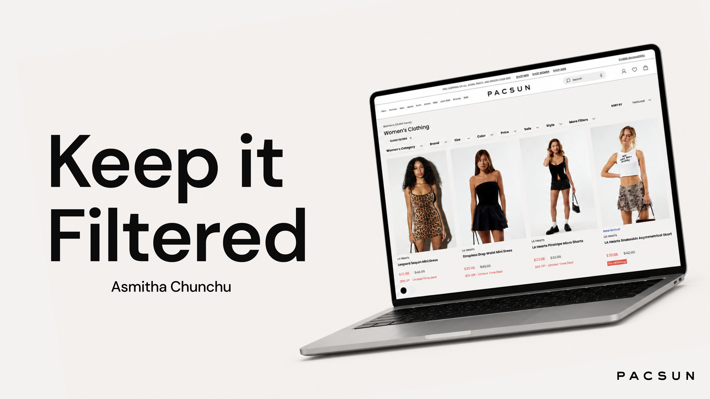
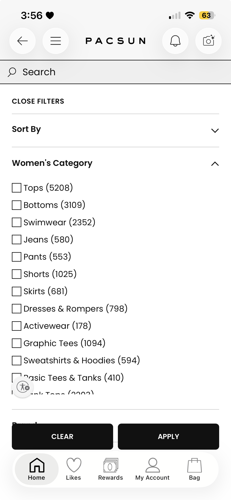
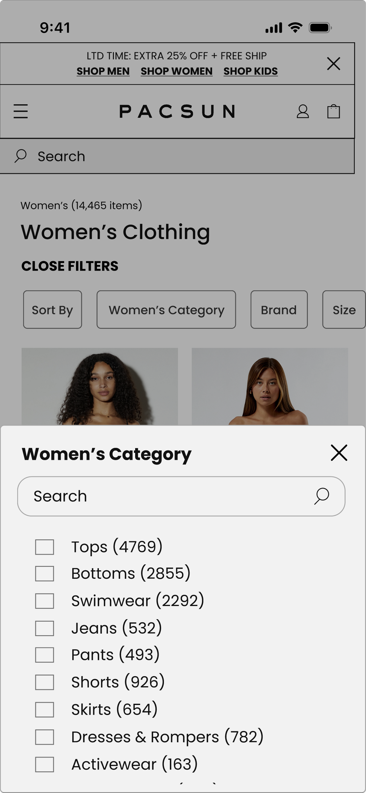

01
Clarified Entry Points
Shoppers needed a faster way to start narrowing products, so I surfaced high-priority controls like sort, category, brand, and size as clear filter chips above the grid.
Pacsun · E-commerce UX
A customer-facing site optimization project redesigning key product discovery workflows: filtering, sorting, category navigation, and applied filter management.

Problem
On mobile, shoppers had to move through a dense filter experience while browsing large product categories. Important decisions like category navigation, size, brand, sort, and applied filters were present, but they competed for attention and made it harder to quickly narrow thousands of products.
Opportunity
I focused on turning product discovery into a clearer decision-making system: easier filter entry points, more readable category groupings, stronger sort visibility, clearer applied filter states, and a mobile layout that helped shoppers compare options without losing context from the product grid.
Ownership
I audited Pacsun’s existing mobile product discovery patterns, compared them against retail competitors, translated recurring usability issues into 5+ workflow updates, and built high-fidelity Figma screens that could be reviewed as a realistic shopping flow.
Design Strategy
The strategy was to keep the product list visible as long as possible, make the active filter category obvious, clarify sorting and applied filter states, and bring high-frequency decisions closer to the surface. Instead of treating filters as a hidden utility, I designed them as part of the browsing experience.


01
Shoppers needed a faster way to start narrowing products, so I surfaced high-priority controls like sort, category, brand, and size as clear filter chips above the grid.
02
Category lists were hard to scan at scale, so I prototyped a focused bottom sheet with search, checkbox states, item counts, and a close action that kept the task contained.
03
To make applying filters feel intentional, I refined hierarchy, spacing, selection states, and action placement so shoppers could understand what was applied, clear choices when needed, and return to the product grid with confidence.
Outcome
The final prototype translated broad product discovery friction into specific workflow improvements: surfaced filter chips, clearer sorting, searchable category navigation, readable product counts, stronger applied filter management, and a more focused mobile flow for narrowing Pacsun’s product catalog.